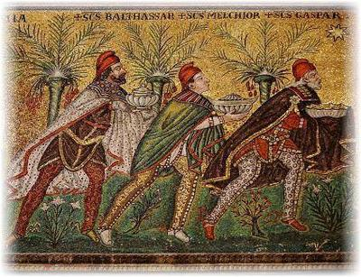

Cada 6 de enero, en amplias regiones del mundo cristiano occidental se celebra lo que se conoce como «Día de Reyes». En otros contextos cristianos, sin embargo, este mismo día conmemora algo muy distinto: la Nochebuena. Sí, porque la Navidad se celebra el 7 de enero en países donde la población está compuesta principalmente de cristianos ortodoxos, como Rusia, Egipto (comunidad copta), Etiopía, Eritrea y otras naciones donde la Iglesia Ortodoxa es predominante, ya que siguen el calendario juliano, que está atrasado respecto al gregoriano. Sin embargo, otros lugares con minorías ortodoxas, como Kazajistán y comunidades en Europa del Este, también siguen esta fecha para sus festividades principales.


Y esto se debe a una razón básica: las festividades religiosas no son verdades universales, sino convenciones culturales moldeadas por el tiempo, el lugar y la tradición dominante. La idea de que Jesús nació un 25 de diciembre, como sabemos, está ligada a procesos de adaptación cultural y competencia simbólica, principalmente con festividades paganas del Imperio romano. Porque la religión, como suele ocurrir, se ajusta al calendario disponible.
Pero volvamos al «Día de Reyes», ¿de cuáles reyes estamos hablando? Se supone que en esta fecha se celebra la visita que habrían hecho a Jesús recién nacido, tres misteriosos personajes que llegaron a Jerusalén provenientes de Oriente, pero el hecho incómodo para la tradición popular es que la Biblia no menciona a ningún rey relacionado con este evento. El evangelio de Mateo —el único que habla de tales personajes— se refiere a ellos solamente como magos (μάγοι, magi): «Unos magos llegaron del oriente a Jerusalén» (Mateo 2:1). Y nada dice sobre cuántos eran, sobre rango político, y ni siquiera sobre sus nombres. Tampoco los llama reyes. Ese título aparecería siglos después, cuando la tradición cristiana comenzó a rellenar con imaginación devota los abundantes vacíos del relato.
Según Mateo, estos magos vieron «en el oriente» una estrella que interpretaron como señal del nacimiento de Jesús. Y dicha estrella no sólo los guio en su viaje, sino que —con total naturalidad para la mentalidad del siglo I— se movía, indicaba rutas y finalmente se detenía en el cielo, sin respetar órbitas, leyes físicas, ni provocar catástrofes cósmicas. Para un autor antiguo sin conocimientos astronómicos, esto no representaba ningún problema narrativo.
En fin, se dice que los tres magos llegaron furtivamente a Belén, donde ofrecieron al niño Jesús sus respectivos regalos, consistentes en productos de alto valor en la Antigüedad: oro, un metal precioso por excelencia; incienso, una resina aromática usada en rituales religiosos, terapéuticos y estéticos, y mirra, una sustancia aromática obtenida de la corteza de un árbol empleada en perfumes, ungüentos medicinales, tinta para papiros, embalsamamiento de cadáveres, e incluso mezclada con vino, como anestésico para moribundos o condenados a la pena capital. Todos eran bienes de difícil obtención, y por tanto, caros. Ya con el tiempo, la teología cristiana se encargó de atribuirles significados simbólicos, aunque el texto de Mateo no sugiere ninguno explícitamente.
¿Y de dónde surge entonces la idea de «Tres Reyes Magos»? Fue probablemente una combinación de factores tardíos:
La identificación de los magi con astrólogos de tradición zoroástrica, provenientes de Mesopotamia o Partia (aproximadamente el actual Irán).
La tendencia a llamar «reyes» a quienes supuestamente podían leer el destino de los hombres en los astros (los astrólogos).
La suposición de que eran tres, simplemente porque se mencionan tres regalos.
Durante los primeros siglos del cristianismo no había consenso: algunas tradiciones hablaban de dos, otras de cuatro, y tanto la Iglesia ortodoxa siria como la Iglesia apostólica armenia sostenían que eran doce, en clara analogía con los apóstoles y las tribus de Israel. No fue sino hasta alrededor del siglo III cuando, apoyándose en textos apócrifos y tradiciones orales, se fijó la idea de que eran tres, y que además eran reyes.
Por otra parte, tampoco se saben sus nombres. Melchor, Gaspar y Baltasar no aparecen en la Biblia. Su primera representación conocida se encuentra en el famoso mosaico de la Iglesia de San Apolinar el Nuevo, en Ravena, Italia, datado en el siglo VI. Aparecen allí tres personajes vestidos al estilo persa, con sus nombres escritos encima, y representados con distintas edades. Sin embargo, no sería hasta el siglo XV cuando Baltasar comenzaría a ser representado con piel oscura, y los tres personajes pasarían a simbolizar los tres «continentes» conocidos por la Europa medieval: Melchor como europeo, Gaspar como asiático y Baltasar como africano. En otras versiones igualmente imaginativas, los magos llegan montados en un caballo, un camello y un elefante. La fantasía popular, como suele ocurrir, jamás se deja limitar por la evidencia.
Pero hay otro detalle interesante respecto a esta fecha, originalmente el 6 de enero los cristianos celebraban la «Epifanía», término griego que significa «manifestación». En el mundo antiguo, esta palabra era aplicada a la supuesta revelación de personajes de importancia religiosa o sobrenatural: dioses, profetas, videntes, chamanes o astrólogos.
En el cristianismo, la Epifanía pasó a interpretarse como la manifestación de Jesús al mundo, es decir, la revelación de que aquel hombre era, en realidad, «Dios hecho carne». Y con el tiempo, en los países de tradición católica, se fusionaron dos celebraciones distintas en una sola: la Epifanía y la visita de los magos.
La justificación teológica llegó después: se dijo que Jesús se había revelado al mundo a través de los Reyes Magos. Una explicación conveniente, como tantas otras, construida a posteriori para dar coherencia doctrinal a una costumbre ya arraigada.
En fin, lo cierto es que hoy, 6 de enero, muchos países celebran con regalos para los niños, cartas dirigidas a los Reyes Magos y la tradicional rosca o roscón de reyes, un bollo adornado con frutas confitadas de colores. Todo ello recuerda más a una festividad cultural que a un evento históricamente verificable o teológicamente coherente.
De esta forma, el «Día de Reyes» es un ejemplo perfecto de cómo las festividades religiosas no descienden del cielo completas y definidas, sino que se construyen gradualmente, se adaptan, se fusionan y se reinventan según el contexto histórico y geográfico.
Lejos de ser eternas o universales, estas celebraciones revelan algo profundamente humano: nuestra necesidad de relatos, símbolos y rituales compartidos. Y, desde una mirada histórica y crítica, también nos recuerdan que lo que hoy se presenta como tradición sagrada inmutable, ayer fue simplemente una elección cultural más, entre muchas otras posibles.
[Crédito de imagen: Mosaico de Iglesia de San Apolinar el Nuevo (Ravena)]
Referencias:
https://es.wikipedia.org/wiki/Epifan%C3%ADa
https://es.wikipedia.org/wiki/Rosc%C3%B3n_de_Reyes
https://es.wikipedia.org/wiki/Incienso
https://es.wikipedia.org/wiki/Mirra
https://es.wikipedia.org/wiki/Bas%C3%ADlica_de_San_Apolinar_el_Nuevo
Comentarios
Comments powered by Disqus